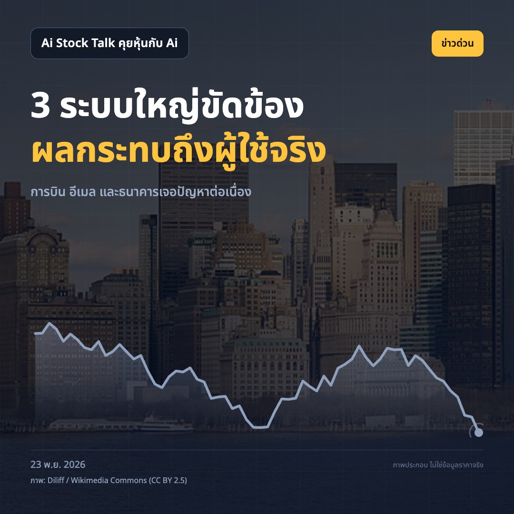
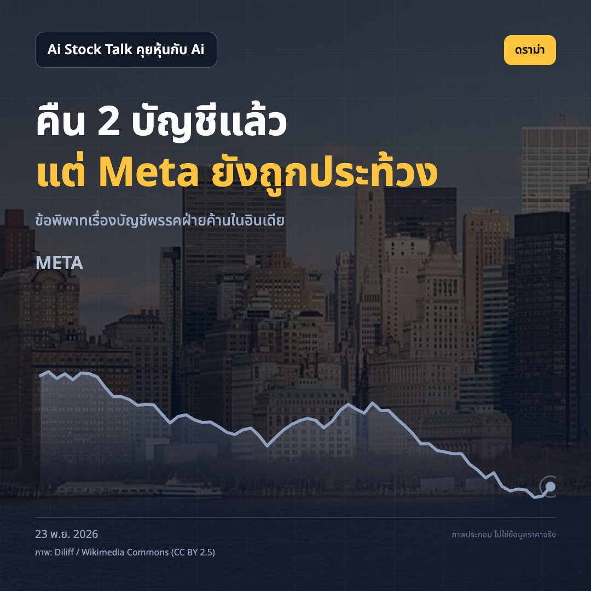
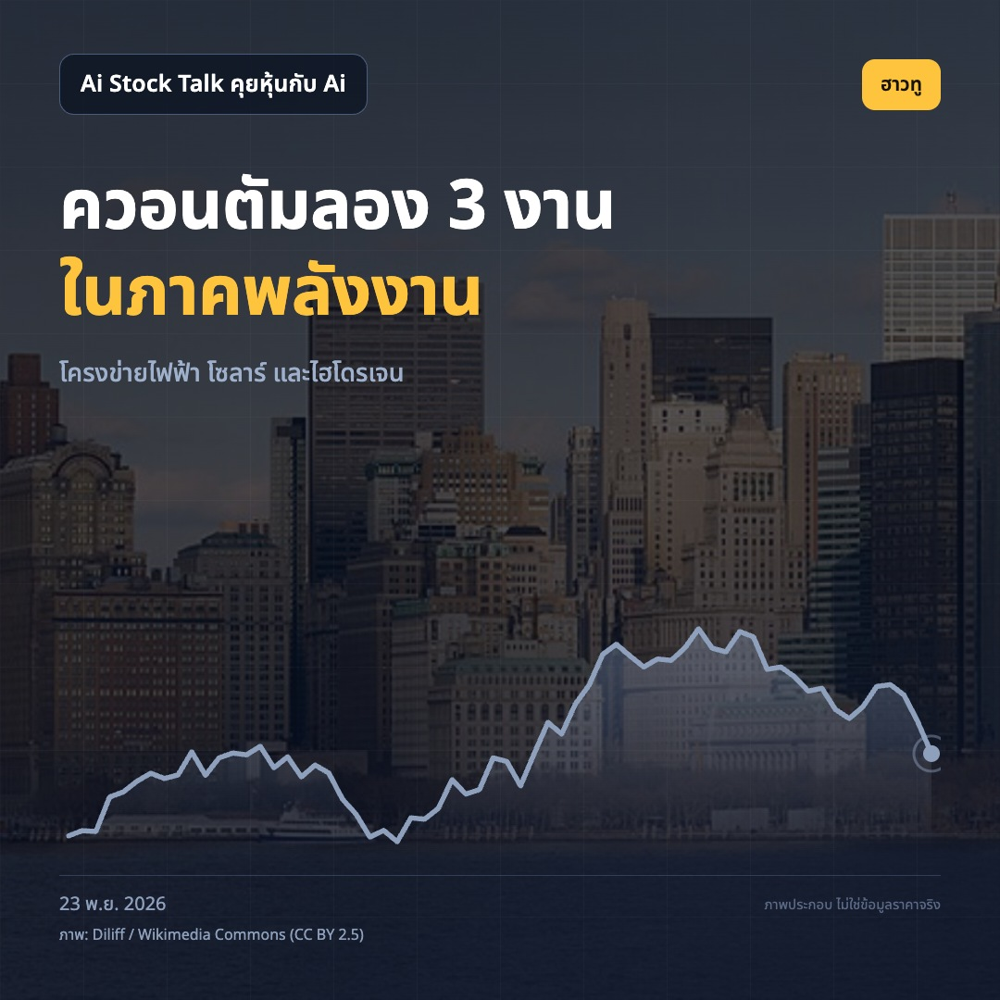
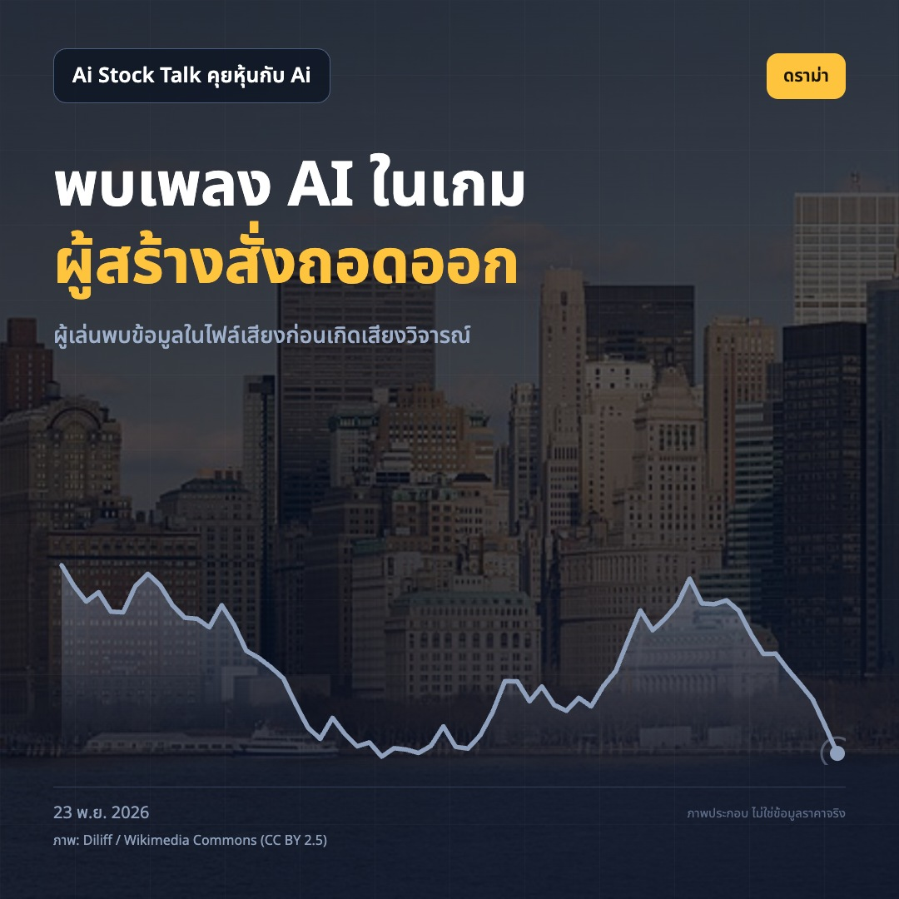

1. ผู้ให้บริการโมเดลบน OpenRouter ถูกแฮก 3 ราย ข้อมูลในพรอมต์รั่ว

ผู้ให้บริการโมเดลบน OpenRouter ถูกแฮก 3 ราย พรอมต์ลูกค้าถูกดึงออกไป
รายงานระบุชื่อ Novita, Phala และ Together ว่าได้รับผลกระทบ ข้อมูลในพรอมต์บางชุดอาจมีรหัสผ่านหรือข้อมูลลับของระบบอื่นปะปนอยู่
ประเด็นที่หนักขึ้นคือ ผู้ให้บริการบางรายเคยระบุว่าจะไม่เก็บพรอมต์ไว้ แต่รายงานพบว่ามีข้อมูลค้างอยู่ในระบบ
ทำไมต้องสน: สำหรับคนใช้ AI ในงานจริง เหตุการณ์นี้ทำให้ต้องกลับมาดูว่าข้อมูลที่ส่งให้ผู้ให้บริการแต่ละรายถูกเก็บไว้อย่างไร ความน่าเชื่อถือของบริการจึงไม่ได้วัดจากความเก่งของโมเดลอย่างเดียว
คุณเคยตรวจไหมว่าพรอมต์ที่ส่งเข้า AI มีข้อมูลสำคัญอะไรติดไปบ้าง?
ที่มา: https://www.blognone.com/node/152238
ข่าวAI #ความปลอดภัยข้อมูล #OpenRouter
ภาพ: Diliff / Wikimedia Commons (CC BY 2.5)
2. ระบบใหญ่ขัดข้องต่อเนื่อง กระทบเที่ยวบิน งาน และธุรกรรม

3 ระบบใหญ่ขัดข้องต่อเนื่อง ทั้งการบิน อีเมลทำงาน และธุรกรรมธนาคาร
รายงานรวบรวมเหตุหยุดบินทั่วประเทศจากปัญหาระบบของ FAA ตามด้วย Outlook ที่ขัดข้องหลายวันจนบางบริษัททำงานสะดุด และเหตุขัดข้องที่ JPMorgan Chase
อีกเหตุหนึ่งทำให้เที่ยวบิน Delta เข้าออกแอตแลนตาล่าช้า เพราะระบบคำนวณน้ำหนักและสมดุลของเครื่องบินมีปัญหา
ทำไมต้องสน: สำหรับคนลงทุนในหุ้นเทคและบริการการเงิน เหตุเหล่านี้ชี้ว่าความเสถียรของระบบเป็นเรื่องที่ต้องติดตามพอ ๆ กับบริการใหม่ เพราะเมื่อระบบล่ม ผู้ใช้และธุรกิจที่พึ่งพามันได้รับผลทันที
คุณพึ่งพาบริการดิจิทัลใดมากที่สุดในแต่ละวัน?
ที่มา: https://www.theverge.com/tech/1039851/major-tech-outages https://www.theverge.com/transportation/1039779/delta-flights-delayed-system-outage
ข่าวเทคโนโลยี #ระบบล่ม #หุ้นเทค
ภาพ: Diliff / Wikimedia Commons (CC BY 2.5)
3. Tesla อัปเดต FSD v15 พร้อมหน้าจอที่แสดงการตัดสินใจของรถ
Tesla อ้างว่า FSD v15 รับมือสถานการณ์ความปลอดภัยฉุกเฉินได้ดีขึ้น 25 เท่า
บริษัทออกอัปเดตระบบ FSD ให้ลูกค้า พร้อมหน้าจอ Reality View ที่แสดงถนนและสิ่งรอบรถเป็นภาพสามมิติ แทนภาพบล็อกถนนและอาคารแบบเดิม
หน้าจอใหม่นี้ยังแสดงว่าระบบกำลังวางแผนและตัดสินใจกับสิ่งที่มองเห็นอย่างไร ตัวเลขเรื่องความปลอดภัยเป็นคำกล่าวของ Tesla ในข่าวที่รายงานอัปเดตนี้
ทำไมต้องสน: คนถือหุ้น Tesla ควรแยกความน่าสนใจของหน้าจอออกจากข้อกล่าวอ้างเรื่องความปลอดภัย เพราะทั้งสองเรื่องตอบคำถามคนละข้อเกี่ยวกับความคืบหน้าของ FSD
ถ้าคุณใช้ระบบช่วยขับ คุณอยากเห็นภาพสวยขึ้นหรือคำอธิบายการตัดสินใจของรถมากกว่า?
ที่มา: https://www.blognone.com/node/152237
Tesla #FSD #หุ้นเทค
ภาพ: Diliff / Wikimedia Commons (CC BY 2.5)
4. ผู้ประท้วงบุกสำนักงาน Meta ในอินเดีย ปมบัญชีพรรคฝ่ายค้าน

Meta กู้คืน 2 บัญชีที่เป็นข้อพิพาท แต่พรรคฝ่ายค้านในอินเดียยังประท้วงต่อ
สมาชิกพรรค Congress รวมตัวนอกสำนักงาน Meta ในเดลี และภาพวิดีโอที่เผยแพร่ดูเหมือนแสดงว่าบางคนเข้าไปในอาคาร กลุ่มเยาวชนของพรรคเรียกร้องให้คืนบัญชีของแกนนำ
พรรคกล่าวหา Meta ว่าปิดกั้นเสียงที่รัฐบาลอินเดียไม่เห็นด้วย แม้สองบัญชีจะได้รับการคืนแล้ว ผู้ประท้วงยังเตือนว่าจะมีการเคลื่อนไหวอีก
ทำไมต้องสน: สำหรับคนติดตามหุ้นแพลตฟอร์ม ประเด็นนี้สะท้อนแรงกดดันที่บริษัทต้องเจอเมื่อตัดสินใจเรื่องบัญชีการเมืองในตลาดขนาดใหญ่อย่างอินเดีย โดยข้อกล่าวหาจากผู้ประท้วงยังเป็นข้อกล่าวหา
คุณคิดว่าแพลตฟอร์มควรอธิบายการปิดบัญชีการเมืองต่อสาธารณะมากแค่ไหน?
ที่มา: https://www.theverge.com/tech/1039732/protesters-storm-meta-offices-in-india
Meta #ข่าวเทคโนโลยี #หุ้นสหรัฐ
ภาพ: Diliff / Wikimedia Commons (CC BY 2.5)
5. บริษัทควอนตัมทดสอบงานพลังงาน 3 ด้าน หาทางใช้งานจริง

คอมพิวเตอร์ควอนตัมกำลังถูกทดสอบกับงานพลังงาน 3 ด้าน
บริษัทในวงการนี้กำลังลองใช้เทคโนโลยีกับการจัดการโครงข่ายไฟฟ้า วัสดุสำหรับพลังงานแสงอาทิตย์ และตัวเร่งปฏิกิริยาสำหรับไฮโดรเจน
รายงานชี้ว่างานพลังงานอาจเป็นจุดที่เห็นประโยชน์ในโลกจริงก่อนงานค้นพบยา แต่สิ่งที่ระบุในข่าวยังเป็นการทดสอบ ไม่ใช่ผลสำเร็จเชิงพาณิชย์
ทำไมต้องสน: คนติดตามหุ้นควอนตัมมีโจทย์ให้ดูชัดขึ้นว่า บริษัทจะเปลี่ยนการทดลองเหล่านี้เป็นการใช้งานจริงได้หรือไม่ แค่มีกรณีใช้งานที่ฟังดูน่าสนใจยังไม่บอกว่ารายได้จะเกิดเมื่อไร
ในสามงานนี้ คุณคิดว่างานไหนมีโอกาสเห็นผลก่อน?
ที่มา: https://www.cnbc.com/2026/11/22/quantum-computing-energy-applications.html
ควอนตัม #พลังงาน #หุ้นเทค
ภาพ: Diliff / Wikimedia Commons (CC BY 2.5)
6. เกม The Binding of Isaac ถอดเพลง AI หลังถูกวิจารณ์

เพลง AI ในเกม The Binding of Isaac: Repentance Plus ถูกถอด หลังผู้เล่นพบเบาะแสในไฟล์เสียง
ผู้เล่นคนหนึ่งพบข้อมูลกำกับไฟล์ที่โยงเพลงในฉากล้อเกม Grand Theft Auto ไปยัง Suno ต่อมาเกมถูกผู้เล่นจำนวนหนึ่งให้คะแนนเชิงลบบน Steam
ผู้สร้าง Edmund McMillen ขอโทษและกล่าวว่าไม่ทราบมาก่อนว่าฉากดังกล่าวใช้เพลงที่สร้างด้วย AI ขณะเดียวกัน Steam กำหนดให้ผู้พัฒนาเปิดเผยการใช้ AI ในกระบวนการสร้างเกม
ทำไมต้องสน: เหตุนี้แสดงให้เห็นว่าการใช้ AI ในงานสร้างสรรค์อาจกลายเป็นประเด็นกับผู้เล่นได้ทันทีเมื่อพวกเขาเพิ่งมารู้หลังเกมออกแล้ว
คุณอยากให้เกมบอกการใช้ AI ในส่วนใดบ้างก่อนตัดสินใจซื้อ?
ที่มา: https://www.theverge.com/games/1039770/binding-of-isaac-ai-music
ข่าวAI #เกม #เพลงAI
ภาพ: Diliff / Wikimedia Commons (CC BY 2.5)